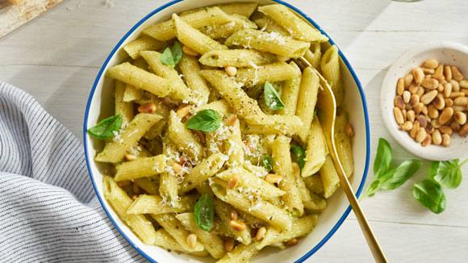

recipes list
Gene's Pasta Pesto Recipe

Ingredients
- 300 gram pasta
- 200 ml cooking cream
- 190 gram pesto
- 2 garlic gloves
- salt & pepper
- a few fresh basil leaves
- a tablespoon parmesan chease
- 30 gram pine nuts
Steps
- heat up 500ml water
- when the water starts boiling add the pasta (look at the package how long you're pasta should cook)
- heat up the pan
- put olive oil in the pan
- roast the pine nuts
- add the cooked pasta with the pesto and the coocking cream
- next put in some salt and pepper
- put you're Pasta Pesto on a plate and add parmesan chease with some fresh basil